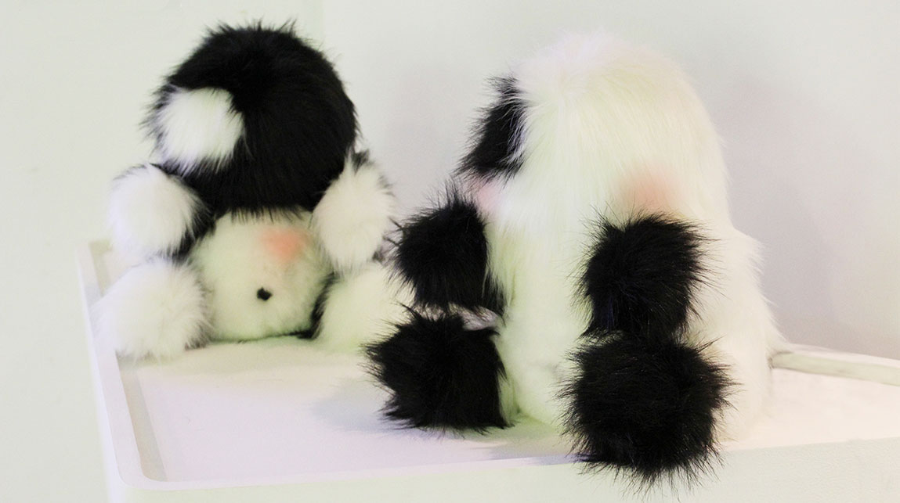
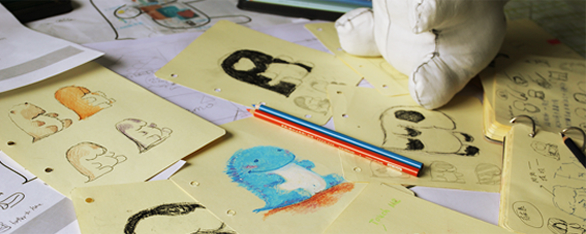
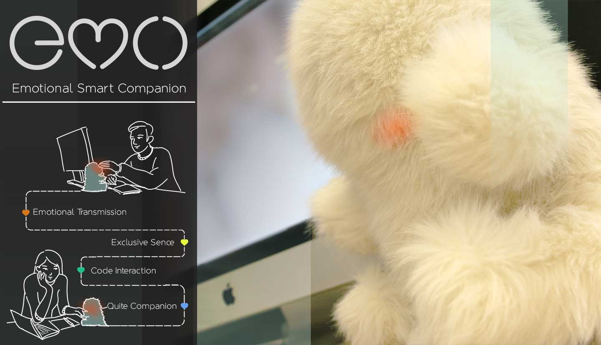
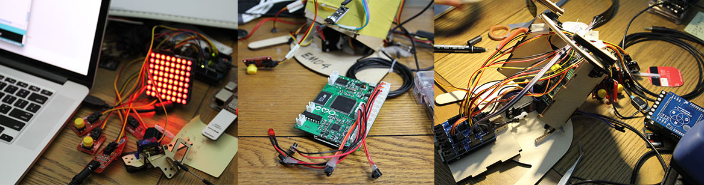
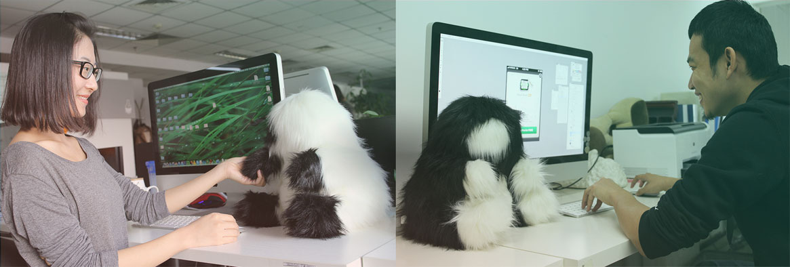
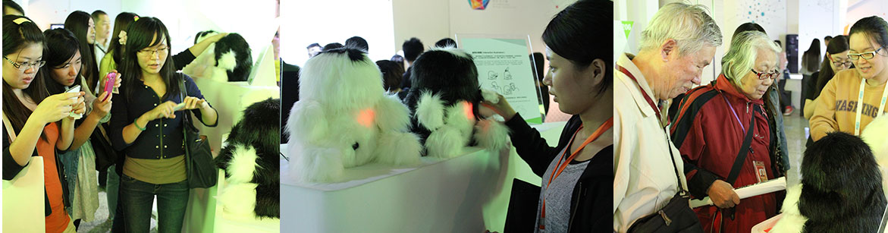

emo
Smart emotion companion Design Help long distance relationship people to communicate through TUI.Master project
2013-2014
Background
With the rapid development of modern technology, we entered the digital, networked, information-based society. We can’t live without computer, mobile phone and tablet. There is nothing more attractive than the rich virtual information world under the cold screen in different sizes. All the interaction between human and the information rely on a finger. And perhaps the most insidious effect of the rapid economic development was how it tore families apart. Young people leave home to the big city for a better career in the future. In this situation, communication becomes more and more important for us. We often forget to contact our family friends since we have lot things to do with the mobile phone. So we think we need some thing new to connect with our family and friends with a natural, undivided，simple and emotional interaction way.
emo-smart emotion companion from YuJi on Vimeo.
User Study
First I did a questionnaire about the long distance relationship(LDR) of which the effective recovery of 50. Then I had some Interviews ,talking with the boys and girls who’s been in LDR and wrote down their stories to find the design pain point. Social network LDR story collection is a very helpful process in my user study because I can get some detail information in LDR that the respondents don’t want to share with me face to face. Of course related paper reading is necessary.
Interaction Design & Toy Design
The Internet questionnaire and user interviews help us understand the couple communicate problem. Most quarrels happen when they are not together. That is caused by misunderstand. Actually the girls will be worried when they have no idea what are the boys doing. Their calls don’t mean that they want to know something, just want to feel you are there. So we design a real companion that can be touched to transmit their missing and always accompany at her side. We named it “emo”. “emo” is a pair of smart emotion companion. It helps people transmit emotion through touching “emo” and speak to “emo” from long-distance. Users can define their own code action interaction through “emo”.I design emo with a fluffy surface because fluffy toy is always emotional and friendly to the people.
Prototype (Arduino & Raspberry Pi )
After we have design solution, we make a prototype with Arduino and Raspberry Pi. Through wireless internet technology, such as WIFI, 3G and 4G, “emo” can connect each other and communicate with each other. In other words, “emo” can talk with each other no matter how far the distance is. And “emo” have a camera which can capture the owner’s face, and recognize the special face of the host, then send the owner’s voice to another “emo”.
User Test
We take two pair of emo to different couples to use. And we found couples were excited about emo’s interaction with their partner, especially the couples who were in long distance relationship. Though emo are welcomed by our target users, we still found some problems when they used it in different contexts, for example: the size, color, sensors... These problems become to the key consideration in emo’s improvement stage.
Beijing International Design Exhibition
Emo attended 2013.10 Beijing International Design Exhibition in China Millennium Monument. And it has been well-loved by the visitors. No matter the young or the old, they were all attracted by emo. Especially the LDR couples，they wanted to use emo very much. Emo has been reported in many network and newspaper for now.
Related Website Report:
Netease digital exclusive interview
leiphone tech report
Beijing Youth Daily report
Beijing Morning Post report